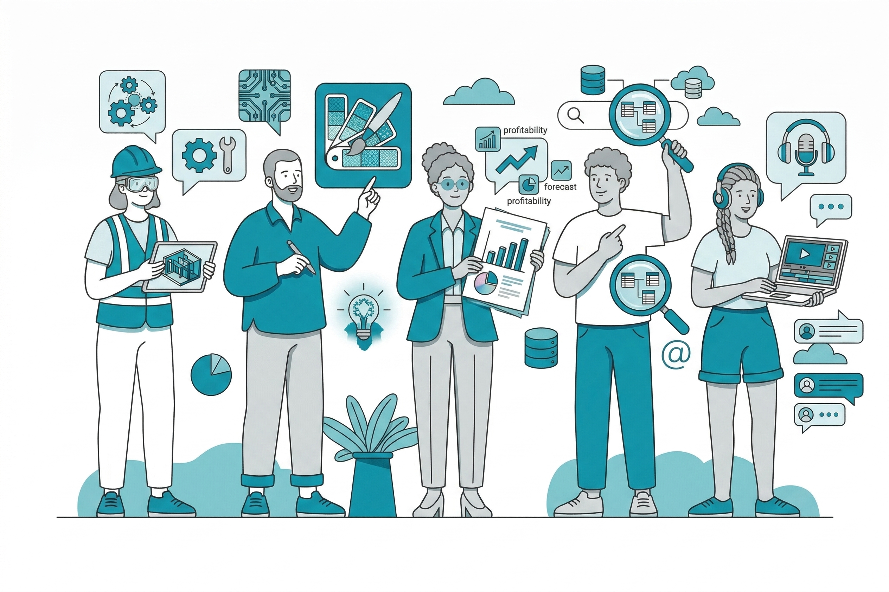

Leading fulltime production support with partners IBM and TCS for BMW NL's strategic applications — MINI IDE, Logilink (credit decisions), Carbon Tracker (emissions analytics), and Flexible Fleet (fleet management) — maintaining 99.9%+ uptime SLAs.
Bridging BMW stakeholders and TCS: translating priorities into clear task queues, tracking execution to closure, and safeguarding SLA-level service quality. Setting and tracking service KPIs across incident, change, problem, and release queues; chairing root-cause reviews that feed fixes into the continuous-improvement backlog.
Introduced Git-versioned operational runbooks and streamlined escalation playbooks, trimming mean time to restore for priority-1 incidents by roughly 25%.
Responding to nightly Informatica PowerCenter failure alerts, investigating issues in PowerCenter Workflow Monitor, and coordinating fixes with developers to keep next-day data-warehouse loads on schedule.
Managing formal onboarding of applications into BMW's standardized IT landscape, ensuring alignment with enterprise architecture standards (eGRC). Leading cross-functional roll-outs of core configuration changes and version upgrades with zero customer-facing downtime.
Overseeing IT governance checks administered centrally by BMW Group, ensuring all operational activities comply with established architectural, security, and process standards.
Data Migration & Architecture
Leading end-to-end migration planning for an Informatica PowerCenter-based DWH (Datavault 2.0) to a custom target architecture — translating a legacy 2-step data warehouse (Staging → Data Vault → Data Marts) into a 1-step AWS architecture (Staging → Cloud) on Snowflake, eliminating complexity while maintaining 100% business logic integrity.
Developed a comprehensive project estimation model using object-based complexity scoring across 208 database objects, accurately forecasting 618 man-days of effort with technology-specific multipliers for the Snowflake/DBT/Glue stack.
Designed an interactive Gantt chart and visual timeline with dynamic hour/day calculations, multi-zoom capabilities (months/weeks/days), and real-time progress tracking — enabling stakeholders to visualize a 25-month project timeline and critical path dependencies across 4 sequential phases.
Facilitated cross-functional collaboration between Belgian and Dutch teams, conducting workshops to resolve scope ambiguities and align on architectural translation approaches.
AI & Innovation-Focused Contributions
Active member of the BMW NL IT AI Core Team, contributing to technology evaluations and feasibility analysis of AI-driven process improvements.
Building an AI-assisted ticketing prototype that auto-flags impending SLA breaches, suggests context-matched knowledge-base articles, and streamlines escalation paths — currently in proof-of-concept stage.
IT Operations Analyst – Daily Manager
Developed and tested custom features for Royal HaskoningDHV's ERP system (Unit4) alongside internal teams, ensuring seamless operations. Served as the single point of contact for resolving ERP-related IT tickets and complex queries, effectively managing escalations and enhancing user experiences across various IT applications.
Changed existing IT operations with flexible and robust IT governance policies, ensuring business continuity and competitive advantage by staying current with modern IT service management practices.
Aligned specialized in-house development teams with Agile and Scrum methodologies, leveraging JIRA and Microsoft DevOps for efficient project management and product delivery.
Evaluated enterprise automation tools for potential enhancements and modifications, implemented corrective measures to address deficiencies, and collaborated with testing and portfolio managers to ensure optimal system performance.
Managed Docker Business licenses at enterprise scale, implementing single-sign-on (SSO) and SCIM provisioning to enhance security and efficiency.
Tested and prototyped Copilot Studio to create and deploy personalized AI agents, consolidating knowledge-bases and experiences to simplify technical and functional troubleshooting.
Organized team-building events and participated in leadership-focused professional development programs, fostering a collaborative and growth-oriented work environment.
Key Projects and Strategic Initiatives
Supported and led an internal analytics team, establishing a relational database infrastructure on Microsoft Azure (Azure Data Lake), sourced via Azure REST APIs with Azure Active Directory authentication. Automated data ingestion for Power BI analytics by deploying ETL pipelines using Alteryx, minimizing manual data refresh inaccuracies. Developed and validated POWER-BI dashboards through iterative Agile methodology.
Developed customizations in Microsoft D365 using Microsoft PowerApps and PowerAutomate, enhancing system functionality and workflow efficiency.
Prepared presentations, action trackers, and IT documentation tools across multiple functional areas. Maintained detailed technical notes and documented processes with diagrams and flowcharts, ensuring reusability and knowledge transfers within the organization.
Building and testing POWER-BI dashboards for the Analytics team in RHDHV.
Analyzing information-systems, project-management tools, custom-software, etc. within the Enterprise Automation department for potential enhancements, modifications, and add-ons.
Completed a freelance project for LionRock Maritime (an Amsterdam-based data technology specialist in drawing insights for tugboat operators), as a Microsoft POWER-BI consultant.
Enhanced tugboat operation insights through data analysis and Power BI consulting. Improved predictive machine learning models with tailored problem statements, driving actionable insights for LionRock Maritime's clients.
Developing a database-driven web-application using HTML, CSS, PHP and SQL for managing consulting services and client information using AGILE principles.
Analyzing internal information management processes and gathering and elicitation of requirements.
Retrofitting a POWER-BI dashboard for improved utilization of consultants/employees and project management.
Project management and issue tracking with Microsoft Project GANTT Charts, communication plans, budgeting, time-boxing, scheduling feedback sessions.
Prioritizing project requirements using the MoSCoW method.
Conducting a user requirements analysis for Microsoft Dynamics NAV usage from multiple stakeholder perspectives.
Developing a Standard Operating Procedure (SOP) for accelerated Microsoft Dynamics NAV.
Implementing a dashboard in IBCS standard for monitoring KPIs — Gross Margin %, Backlog, Orders (open and closed), Delivery Performance, Sales — from Microsoft Dynamics NAV 2016.
Observing the way of working and then searching for opportunities to improve the use of CRM (Salesforce), which is used by the entire commercial part of the company.
Creating a conceptual design for a software module which collaborates with the Zetes Salesforce environment by analyzing business requirements to enhance marketing activities.
Delivering a Functional Requirements Document for this concept module along with a User Interface Design (UID).
Creating a comprehensive press-kit and toolkit for events including landing pages for marketing campaigns using HTML/CSS, and banners and posters using Canva.com.
IT Ticketing & Knowledge Management System (Sep 2024 – Present)
Developing a full-stack prototype IT helpdesk and ERP system from scratch, focusing on structured issue tracking, role-based access, SLA monitoring, and integrated knowledge management. Currently deployed on a local WAMP stack (Windows, Apache, MySQL, PHP).
Tech Stack: PHP, MySQL, HTML, CSS, JavaScript.
Key Features: Role-Based Access Control (RBAC) across IT support tiers (Tier 1–4); structured ticket generation with escalation options; a knowledge base with article categorization and tagging for self-service; automated SLA tracking with color-coded urgency indicators; team management with admin-assignable roles and permissions; and an integrated Financials module covering Invoices, Expenses, Ledger, Budget, and a Chart of Accounts.
AI Workflow (PoC): Integrating an LLM-powered agent that scans open tickets, predicts imminent SLA breaches, surfaces context-matched knowledge-base articles, and proposes escalation paths.
I would introduce myself in a professional context as:
An experienced IT Operations professional currently overseeing BMW Nederland's fulltime IT applications, driving incident, change, problem, and release processes under strict ITIL and centrally governed standards. Recognized for securing 99.9% uptime across cloud and enterprise platforms and compressing MTTR through version-controlled runbooks and rigorous root-cause reviews.
A pioneer of selective AI adoption — developing proof-of-concept ticketing solutions that predict SLA risks, surface contextual knowledge, and streamline escalations, while safeguarding compliance and operational resilience.
Someone who combines deep technical fluency in cloud, ETL, and integration landscapes with strong business acumen from prior marketing, finance, and project-management roles, delivering clear, persuasive communication to stakeholders at all levels.
A motivated professional with international work experiences in IT operations, data analytics, digital marketing, and operational roles based in the Netherlands and Germany.
Having a solid background in Information and Communication Technology, Corporate Management, and professional experiences that combine tech and business at their intersection.
Having a knack for simplifying complex technical ideas — quantitative or qualitative — to non-technical minds in an engaging way. I am a first principle's thinker and I like connecting the dots as I create a view of the Big Picture!
Having a strong interest in learning on the job and developing the working knowledge required for the practice, irrespective of the problem or the technology. I am motivated by ambitious goals and challenges within the intersection of technology and business, and I like to face them head-on!
I thrive in a world that combines both tech and business. Digitalization, product-ownership, marketing and value-creation — all aspects which I believe should be realized from a unified vision or ideology. I also believe in bold moves for innovation.
Sometimes a little-bit of risk can yield great rewards. I always push myself to think from all the sides of the box to find the situation which can yield the maximum reward or the best-possible outcome!
With that being said, I intimately understand the need for constraints in business logic. I love finding myself working with the details, designing systems which are complacent to constraints whilst remaining successful in terms of the over-all goals they need to achieve.
The core values that I believe in are sincerity, creativity, showing initiative and taking on responsibility. I am the type of team player that listens and allows my actions to speak for itself. Furthermore, I hold a seasoned sense of respect for my seniors and diligent care for the success of my peers.
Overall grade point average of 93 out of 100 grade points (1.4) with distinction.
Main Subjects: Customer Management, Strategy and Governance, Value-based Corporate Finance, Corporate Change and Alignment, Strategic Marketing, Economics and Ethics, Quantitative & Qualitative Research Methods
Main Subjects: Business Economics and Administration, Data Warehousing & Statistics, E-Business, Network Architecture, Service Oriented Architecture & Management, Supply Chain Management, System Development, User Interface Design
Putting models to work inside a running service, and measuring whether they helped.
Evaluation & Model Routing
Deciding which model runs next, on evidence rather than reputation.
AI Governance & Responsible Adoption
Controls that sit beneath the model, where they cannot be talked around.
IT Service Management
The chain from an incident to a structural fix, governed rather than improvised.
IT Risk, Governance & Continuity
What an application must prove before it is allowed to carry the business.
Engineering
Building the thing, not only specifying it.
Cloud & DevOps
Where the thing actually runs, and how it gets there.
Data, Applications & Delivery
Moving warehouses, owning platforms, and shipping against a plan.
Earlier ground, still occasionally useful: Salesforce, digital marketing analytics and technical SEO, and Ethereum smart contracts, the subject of a master's thesis on improving invoicing accuracy.
PROFILE HIGHLIGHTS
LIONROCK RECOMMENDATION
SELF-GUIDED PROJECTS

DeskOps
Sep 2024 – Present
A full-stack helpdesk and ERP system built from scratch, solo, featuring role-based access, SLA monitoring, a financials module, knowledge management, and a RAG-powered AI research layer with ChromaDB, multi-model LLM fallback, and two-pass citation generation.
I did my MSc. in Corporate Management from the University of Europe for Applied Sciences, located in Berlin, Germany. Prior to which, I completed my BSc. in Information and Communication Technology from Fontys University of Applied Sciences, located in Eindhoven, the Netherlands.
My work at GUS as a data-assistant started on 15-Oct-2019 and ended on 29-Feb-2020. The tasks involved creating Excel-formulas which could correctly replicate the built-in COUNT and FILTER functionalities of Microsoft Excel and use it for specific reporting needs. The data-set was taken from their CRM system: Microsoft Dynamics 365. I presume that their CRM is connected to their public-website which collects user-inputs.
The dataset was downloaded and copied to a spreadsheet on a weekly basis for analysis. The challenging part was keeping up with the size of the data-set which would always be more than 11,000 rows. Due to its size, the spreadsheet was also quite bulky and slow. However, it served its purpose well and provided the analytics needed by the department.
The report was unlike anything I had seen before. The very application of combining wild-cards and COUNTIF functions to identify specific strings of text in the data, count/aggregate that data and generate the metrics required by the marketing department was just ingenious in my opinion. However, there were a lot of errors in the formulas. My task involved testing those formulas using the built-in COUNT and FILTER functionalities of Excel and then rectifying those Excel formulas accordingly. Another titbit — my experience was very reminiscent of my engineering courses in Mathematics on SET-THEORY, which is a branch of Mathematical theory about collections, called sets.
For my efforts I received a record/recommendation letter from the department and of course a very pleasurable working experience.
My bachelor program was a combination of technical and business-oriented subjects. Besides courses in programming languages such as SQL and C#, we were taught the fundamentals of project-management, research methodologies like DOT-framework and statistical analysis.
For example, we were taught courses on Supply Chain Management, Economics & User Interface Design. It provided the necessary theoretical frameworks to comprehend the elaborate technical applications of System Oriented Architecture, Data Warehousing and Web-Application Development within business contexts. I got to thoroughly understand what it means to be within the intersection of technology and business.
Secondly, my engineering school (Fontys) also required completing internships at a professional level. It involved solving real-world business problems, delivering comprehensive management reports, interacting with stakeholders, organizing and conducting work-shops and finding appropriate technical solutions. My internship experiences in The Netherlands made me realize that I needed to take the next steps in the direction of a management program to create a well-rounded profile. That is why I chose the Master's program in Corporate Management from UE, Germany.
I offered my services to LionRock Maritime (an Amsterdam-based data-technology company specialized in the maritime industry, specifically towage operations) as a freelance POWER-BI consultant. It was a part-time role. Specific details of the project and its description cannot be disclosed due to an NDA signup. What I can definitively share is the fact that I received a highly positive , available on my LinkedIn Profile for your perusal.
Although functional and technical roles are very different from one another, they complement each other to serve a greater function. I would position myself in a functional role and then gradually transition into a techno-functional role by gaining valuable experiences from both roles. In order to differentiate both roles, I present the following information from Do You Even ERP.
A technical consultant is typically a programmer or a systems administrator. As the name suggests, they have an in-depth understanding of the technical processes required to help your business flourish.
This person will likely have a background in IT and will be able to figure out how much processing power the business needs, install upgrades, ensure all requirements are met, and execute the technical configuration of your entire Information System (IS) to work the way it's supposed to.
A technical consultant will also oversee the system's daily maintenance and work out bugs. They'll provide technical support by troubleshooting problems and helping resolve issues that customers have.
Functional consultants have a bit of a different background; while they most likely have a lot of experience with computers, they combine business process knowledge, financial knowledge, and technical knowledge, making them a valuable member of your team.
Once an IS is up and running, the functional consultant will take on more tasks like setting performance benchmarks, making sure your system is working the way it should and preparing stakeholders for steady-state operations.
Being a functional consultant also refers to the way they configure the system to support business processes. This requires functional consultants to have an understanding of things like accounting, sales, plant maintenance and the big picture.
Functional consultants must determine the requirements for things such as how much memory and speed the computer system needs. They also take a step further and help draw up plans for programmers to use when building the computer system.
I am passionate about several things. Firstly, I am passionate about problem-solving within the intersection of technology and business. It is a creative enterprise, one that requires intense imagination. This probably isn't surprising coming from an engineer, but I love the aspect that allows me to experiment with code, data and various IT/software tools (video-games included). For example, when I started developing this website, I did not realise the importance and the effort that goes into building a mobile responsive design. Such optimization is not only aesthetically pleasing on devices with varying screen sizes but also a great digital marketing strategy. Specifically, I deeply enjoy the process of discovery and getting/sharing feedback with developers and users. Engineers are modern-day inventors and so can embody qualities of creative, intelligent thinkers and imagine solutions to extraordinary problems. It's exactly why I enjoy what I do as an engineer.
Secondly, I am very passionate about self-development. I like reading essays, articles, papers etc. or watching online videos that help me to improve in a specific area. For example, in my last project I wanted to improve my data-visualization skills with Power BI and other related soft-skills, and so I enrolled in an online training course. Within just a few weeks I noticed a big improvement in my ability to communicate my results with clarity and confidence. I am also passionate about progression in my career because doing well at work enables me to achieve my professional ambitions. Not to mention, the opportunities for securing a better future for one's own team and the organization at large.
Thirdly, I am also quite fond of research and creative writing. I like brainstorming ideas to identify favourable connections with my world-view and compose informative pieces. The aim is to showcase my interest in the area and to also inspire readers to think along with me.
My experiences working on team-projects with more than two members have taught me the importance of striking a balance between the personalities and strengths in a group. This exercise involves the assignment of best-fit roles with the identity of each member. It is a necessary but artful complex.
I, for one, appreciate a clear-cut description of roles and specializations with some wiggle room for trying out other facets. However, context is the king when it comes to achieving long-term goals and I have found fulfilment in team-work where this ideology is followed. If a team can achieve a full-view of the context within which it will operate, and strive to cover each other's blind-spots effectively, then the team surely enjoys a major advantage.
With that being said, I have participated in different roles and found affinity towards some more than others. To illustrate my claim, I would like to apply Dr. Raymond Meredith Belbin's team-role theory (a model based on behavioural attributes), using a 5-star rating system (1 star representing the least affinity and 5 stars representing the highest).
Role
Rating
Resource Investigator
Uses their inquisitive nature to find ideas to bring back to the team.
Teamworker
Helps the team to gel, using their versatility to identify the work required and complete it on behalf of the team.
Co-ordinator
Needed to focus on the team's objectives, draw out team members and delegate work appropriately.
Plant
Tends to be highly creative and good at solving problems in unconventional ways.
Monitor Evaluator
Provides a logical eye, making impartial judgements where required and weighs up the team's options in a dispassionate way.
Specialist
Brings in-depth knowledge of a key area to the team.
Shaper
Provides the necessary drive to ensure that the team keeps moving and does not lose focus or momentum.
Completer Finisher
Most effectively used at the end of tasks to polish and scrutinise the work for errors, subjecting it to the highest standards of quality control.
Implementer
Needed to plan a workable strategy and carry it out as efficiently as possible.
This is of course very subjective and highly likely to change over time. The only certainty I can assert right now is the importance of trust and positive reinforcement within a team.
I consider my Science, Technology, Engineering, & Mathematical (STEM) mindset/intuition as my most fundamental skill. It is something I started developing early on in my education, and I try to maintain it to the best of my capabilities.
However, I mostly perceive its actions and its "inactions" outside the classroom. The classroom has mainly helped me develop my knowledge and practice of the scientific approach, i.e., the process of objectively establishing facts through testing and experimentation.
Furthermore, I find that the mental-model and the effort that goes into building STEM intuition simply doesn't happen over-night. Whilst grappling for conceptual clarity with complex fields in STEM, I find myself fully engaged and immersed, which in turn builds up this "intuition". The industry term being deep-work.
I was mostly unaware of this build-up; even though I was applying it in various non-STEM fields. My experiences in the industry (referring to the intersection of technology and business) have reinforced it even further. This in turn has heavily influenced my other soft-skills like problem-solving and computational thinking (CT).
Some other skills I found quite useful in my career so far, include:
critical and analytical thinking,
creativity and reasoning,
and communication skills (both verbal and non-verbal).
All these skills together have made my STEM intuition much more applicable in a professional and academic context. I consider my ability to use them (in-tandem or individually, as needed) to be my most valued soft-skill.